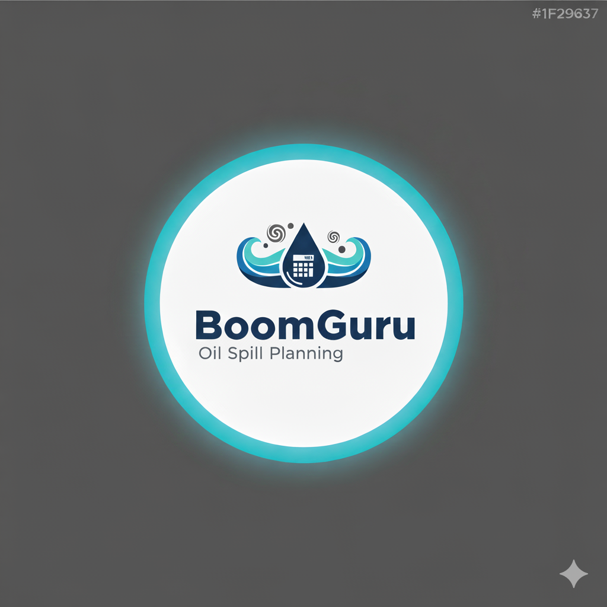

This tool is designed to calculate boom deployment parameters for **Diesel Fuel** spills based on river current (0.7 - 10 knots), boom angle, and river/profile width.
Drift Time Measurement
To use the timer, drop a cork or small float 100 feet upstream from your location. Press start when you drop it and stop when it passes you.
Cascade Booming System Recommended
Based on your specified conditions, a single continuous boom may experience excessive tension. A cascade booming system is recommended for this deployment to effectively contain oil and manage anchor loads.
Note: Data in View Past Reports is available for viewing and download for 24 hours.
This calculator is based on the 2013 EPA Inland Response Tactics Manual and has been adapted for 8x12 river boom and 22 lb Danforth anchors by the Tennessee Valley Authority Environmental Response Team.
Operational Factors
- River Current Speed: Faster currents require tighter spacing between boom segments to manage hydrodynamic pressure. A single long boom can be overwhelmed, leading to a "swamped" or "planing" effect where oil is pushed underneath.
- Oil Entrainment: High currents can cause oil to be pulled under the boom, a process called entrainment. Cascades minimize this by allowing oil to be collected at multiple points before the current accelerates too much.
- Boom Angle and Overlap: In faster currents, the boom angle must be smaller to the current to divert pollutants. Proper segment overlap (5 to 10 ft) is critical to prevent gaps and manage the strain on the system.
- Hydrodynamic Pressure: By breaking a long boom into shorter segments, the cumulative force of the water is distributed, making deployment feasible in high-current situations. Some specialty booms even have vented skirts to reduce pressure.
- Operational Strategy: Cascade systems can be used to create intentional gaps for vessel traffic, where the spacing is dictated by the vessel's needs and the potential for oil to escape.
Anchor Specifics
This guide is based on the performance of a 22-pound Danforth anchor, a fluke-style anchor known for its high holding power relative to its weight. This anchor is particularly effective in a sand or mud riverbed, where it is capable of achieving an approximate holding power of 1,600 pounds. Its holding power is significantly reduced in other types of riverbeds, such as rock, clay, or grass, which should be considered when adjusting anchor requirements in the field.